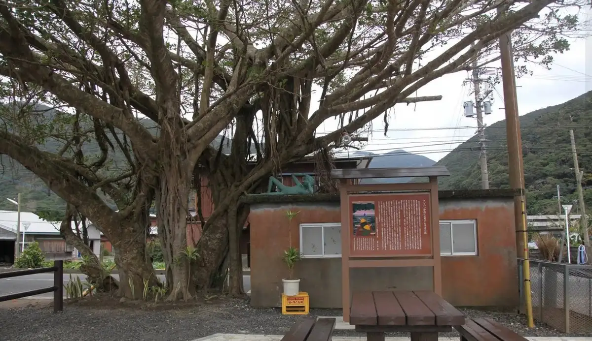
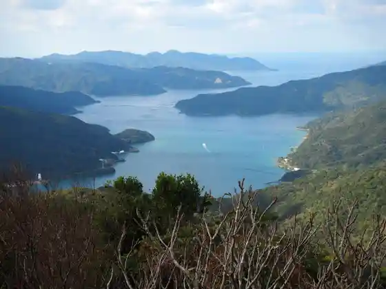
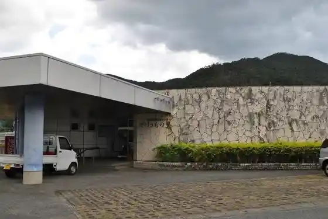
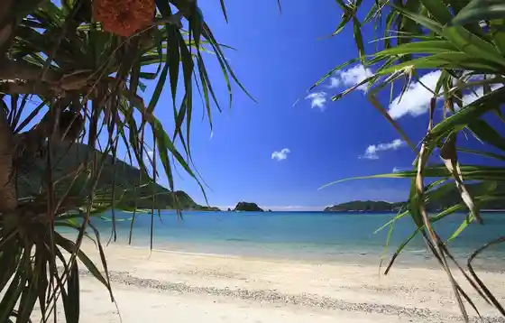
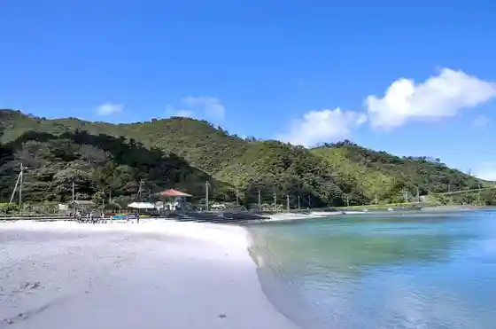

Japan / Kagoshima / Uken
Uken · Kagoshima
Uken
Highlighted on the Kagoshima map.

Row Dantaimei Uken (Ukenson) on the prefecture Shi Town Village Ichiran. The table does not print a separate building name.
Yuwan Gaku
Uken, Kagoshima · 0997-67-2211 · Official / source link

Yakeuchi Village
Uken, Kagoshima · 0997-67-2295 · Official / source link

Ya Don (Yadon) Beach

Taen Hama Beach

Funakoshi Beach
Uken, Kagoshima · 0997-67-2218 · Official / source link
Ta Ken Basu Tei Ta Kenganmun Park
Mineta Yama Park
Nearby in Kagoshima: ← Toshima · Wadomari →
Other towns: Aira · Akune · Amagi · Amami · Chinacho · Higashikushira · Hioki · Ibusuki · Ichikikushikino · Isa · Isen · Izumishi · Kagoshima · Kanoya · Kikai · Kimotsuki · Kinko · Kirishima · Makurazaki · Minamikyushu · Minamiosumi · Minamisatsuma · Minamitane · Mishima · Nagashima · Nakatane · Nishinoomote · Osaki · Satsuma · Satsumasendai · Setouchicho · Shibushi · Soo · Tarumizu · Tatsugo · Tokunoshima · Toshima · Wadomari · Yakushima · Yamatomura · Yoron · Yusui
All towns in Kagoshima · Back to all prefectures